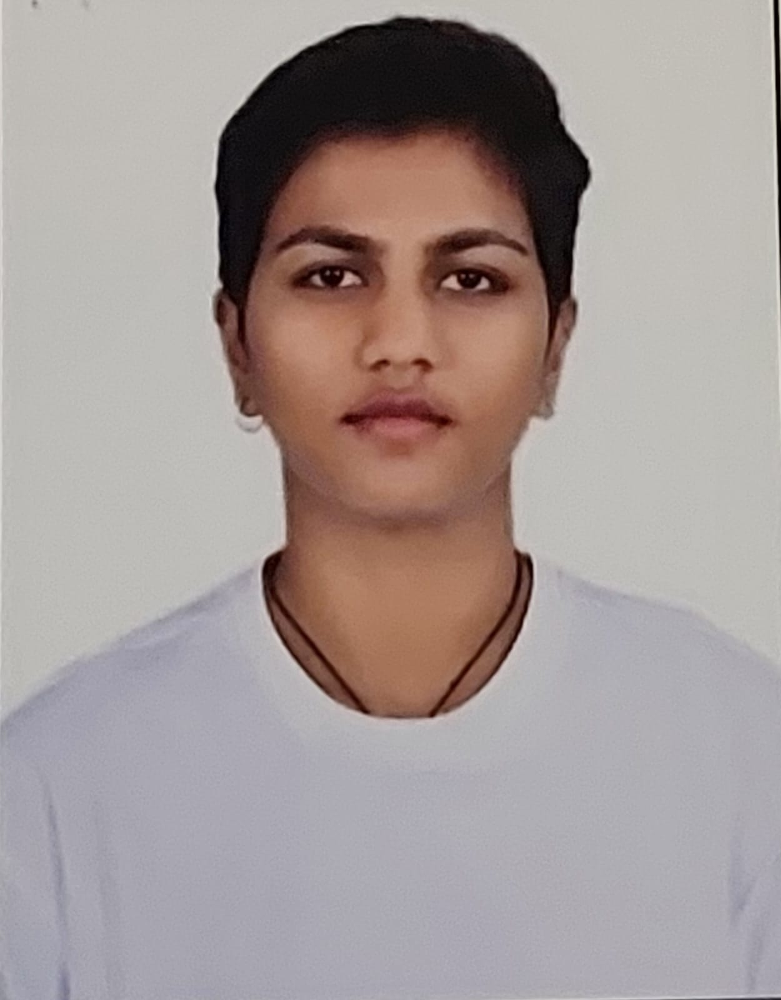

Sujatha Prakash

Summary
Junior Project Manager with experience supporting project planning, execution, scheduling, and documentation in technical and R&D environments. Skilled in stakeholder coordination, vendor management, task tracking, and status reporting. Strong technical foundation in Robotics and Automation with proficiency in MS Excel, Word, and PowerPoint.
Edcation
B.Tech – Robotics & Automation, Jain University (2022) | CGPA: 7.0 Work Experience
Junior Project Manager (Junior Technical Manager)
Supported end-to-end project execution across drone hardware, software R&D, and live operations
Coordinated with cross-functional teams, vendors, and stakeholders to track tasks and timelines
Assisted in scheduling, progress tracking, and status reporting
Maintained project documentation and communication logs
Identified risks, dependencies, and execution gaps and supported mitigation
Business & Data Analyst Intern
Analyzed operational data and supported process improvements
Coordinated with stakeholders and assisted HR operations
Robotics Trainee - Evobi Automation | Apr 2022 – May 2022 Skills
Project Coordination
Scheduling
Task Tracking
Status Reporting
Stakeholder & Vendor Management
Documentation
MS Excel
PowerPoint
Word
Other
Copyright © 2026 sujatha Prakash. All Rights Reserved.